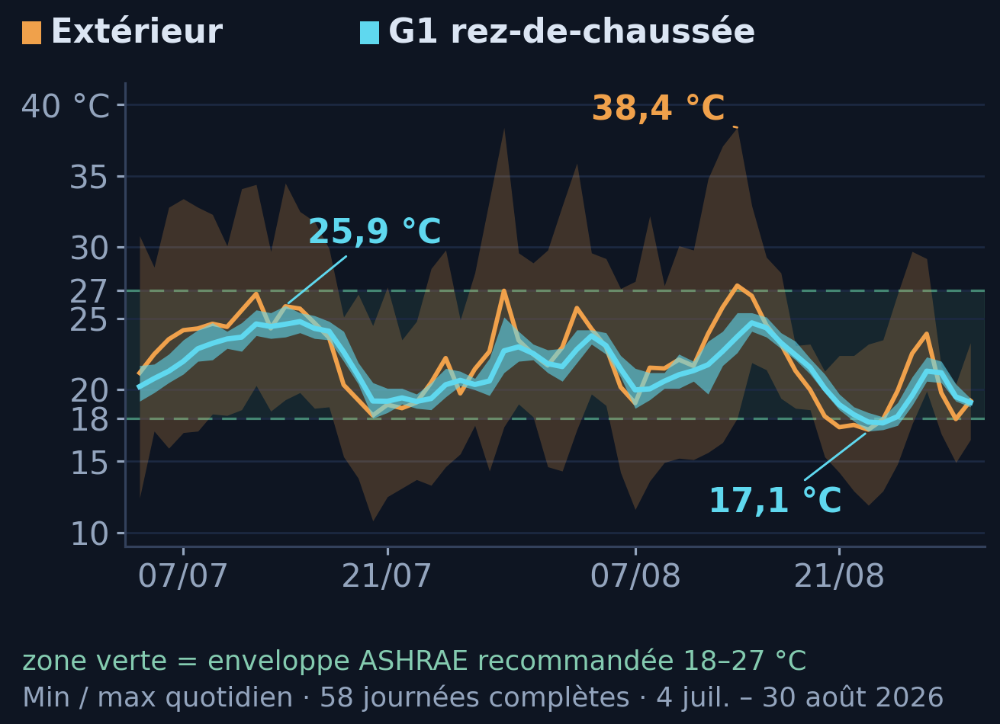
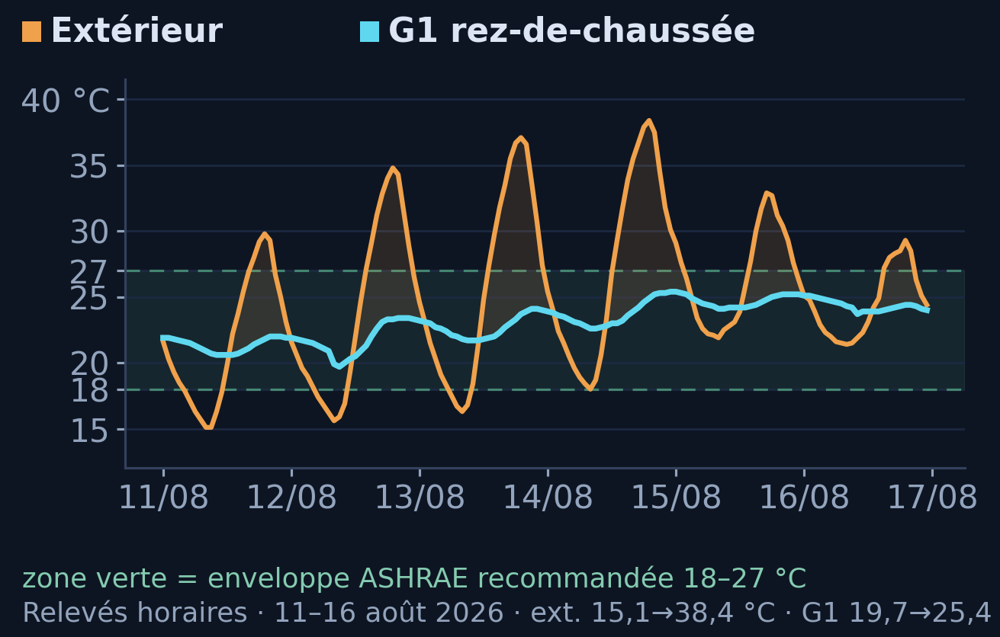

01 — L’existant
Un bâtiment déjà intégré au territoire
Volumes, accès, raccordement potentiel et foncier déjà constitué.
Infrastructure IA distribuée · Réemploi du bâti existant
GPUAtHome transforme des bâtiments existants en sites d’accueil qualifiés et préparés, loués aux opérateurs pour y déployer leurs infrastructures de calcul.
01 — L’existant
Volumes, accès, raccordement potentiel et foncier déjà constitué.
02 — La qualification
Énergie, thermique, réseau, sécurité et usages compatibles.
03 — Le produit
GPUAtHome pilote la préparation. Le propriétaire loue le site ; l’opérateur y installe et exploite ses équipements.
04 — La vision
Des capacités distribuées, adaptées aux territoires et aux besoins réels du calcul.
Pas un rapport de plus. Un site qualifié, préparé et mis à disposition.
Preuves disponibles et prochaines validations publiées.
Une autre voie pour déployer le calcul
| Critère | Data center hyperscale | Modèle distribué GPUAtHome |
|---|---|---|
| Point de départ | Construire une nouvelle infrastructure ou transformer lourdement un site | Activer un bâtiment existant déjà intégré au territoire |
| Échelle | Concentrer plusieurs dizaines ou centaines de MW | Déployer des capacités modulaires, site par site, généralement sous 1 MW |
| Foncier | Rechercher et mobiliser une emprise importante | Réemployer un actif immobilier disponible |
| Construction | Créer un nouveau bâtiment ou engager une transformation lourde | Pas de construction immobilière nouvelle |
| Artificialisation | Nouvelle emprise et artificialisation possibles | Aucune nouvelle emprise immobilière ni artificialisation liée au bâtiment |
| Paysage | Infrastructure nouvelle, visible et concentrée | Bâtiment déjà présent dans le paysage |
| Électricité | Besoin massif pouvant nécessiter des infrastructures dédiées | Capacité dimensionnée selon le bâtiment et le réseau local |
| Eau et refroidissement | Besoins potentiellement très importants selon l’architecture | Refroidissement dimensionné selon la capacité et le workload |
| Déploiement | Projet long, centralisé et fortement dépendant des autorisations et travaux | Qualification puis préparation technique d’un bâtiment déjà debout |
| Acceptabilité | Nouvelle infrastructure à faire accepter | Infrastructure immobilière déjà présente et intégrée |
| Opposition et recours | Projet exposé aux contestations liées à l’emprise, au paysage, à l’eau et aux infrastructures | Principaux objets de contestation supprimés à la source par le réemploi |
| Montée en capacité | Un très grand projet concentré | Un site, puis éventuellement un campus, puis un réseau |
| Usages | Calcul massif exigeant une très grande concentration | Workloads compatibles avec une capacité distribuée |
| Valeur territoriale | Concentration sur quelques grandes implantations | Réactivation d’actifs existants et création de revenus locaux |
Là où un hyperscale doit faire accepter une nouvelle infrastructure, GPUAtHome active une infrastructure immobilière déjà présente.
Pas de nouveau bâtiment, pas de nouvelle emprise foncière, pas d’artificialisation supplémentaire et pas de transformation massive du paysage : GPUAtHome supprime à la source les principaux motifs de contestation rencontrés par les grandes implantations.
Urbanisme et réglementation : GPUAtHome part de bâtiments déjà construits. Le modèle supprime l’étape de construction du bâtiment et concentre le projet sur sa qualification et sa préparation technique. Les formalités éventuellement applicables sont vérifiées site par site et restent sans commune mesure avec celles d’une implantation hyperscale nouvelle. Pour G1, aucune construction nouvelle n’est nécessaire : la démarche d’urbanisme porte sur la compatibilité de l’usage projeté avec le bâtiment existant.
Échelle : GPUAtHome privilégie des unités distribuées de moins de 1 MW par site, dimensionnées selon le bâtiment, le réseau local et les workloads visés. Cette échelle réduit fortement les contraintes propres aux implantations massives ; elle ne constitue pas une exemption réglementaire.
Pourquoi maintenant
La demande de calcul accélère tandis que la puissance électrique, le raccordement, le foncier technique disponible et le délai de mise en service deviennent des contraintes stratégiques. La question n’est plus seulement de savoir combien de GPU sont disponibles, mais à quelle vitesse une infrastructure physique adaptée peut être mise en service.
L’entraînement de très grands modèles repose sur des infrastructures fortement concentrées, où de nombreux GPU doivent communiquer à très haut débit. D’autres charges de calcul, notamment certaines formes d’inférence, peuvent être exécutées sur des capacités plus autonomes et de taille limitée.
Un workload est une charge de calcul caractérisée par ses besoins en puissance, densité par baie, refroidissement, connectivité, latence et disponibilité. GPUAtHome détermine quels workloads peuvent être accueillis sur chaque site, à quelles conditions et après quelles adaptations.
Le bon workload au bon endroit. Tous les calculs n’exigent pas un campus hyperscale. Inférence, rendu, calcul batch, traitements asynchrones, certaines opérations de fine-tuning ou capacités souveraines locales peuvent trouver leur place sur une infrastructure distribuée, sous réserve de leur appariement technique et économique avec le site.
Ce sont là les familles de workloads pertinentes pour le modèle. Les workloads effectivement admissibles sur G1 restent à déterminer avec l’opérateur.
Une conviction en découle : l’avenir de l’infrastructure IA ne sera pas uniquement concentré. Une partie du calcul peut être distribuée dans des actifs existants — à condition de savoir les qualifier objectivement.
Contraintes d’accueil · territoire et réglementation
Deux pressions se combinent sur les grandes implantations : sur le terrain, l’acceptabilité locale et les recours ; dans les textes, des exigences de mesure, de performance et d’implantation de plus en plus précises. Les trois dossiers ci-dessous documentent ces contraintes et le point de comparaison qu’elles constituent.
Le déploiement de nouvelles capacités de calcul ne dépend plus seulement de l’électricité disponible et des délais de raccordement. Il dépend aussi de la capacité d’un territoire à accueillir l’infrastructure correspondante. À mesure que les projets gagnent en taille, ils concentrent en un même point plusieurs interfaces sensibles : emprise foncière, artificialisation, paysage, eau et milieux naturels, bruit, biodiversité, infrastructures électriques nouvelles, procédures publiques et délais de recours des tiers — auxquels s’ajoute la perception locale du rapport entre bénéfices et contraintes.
Ces sujets ne relèvent pas uniquement du débat d’opinion. Au Bourget (Seine-Saint-Denis), l’autorité environnementale régionale a relevé en 2025 des insuffisances substantielles dans le dossier, notamment des mesures de qualité de l’air jugées non représentatives et une étude acoustique à reprendre. Les préoccupations exprimées par les riverains — bruit, qualité de l’air, santé publique — ont ensuite été reprises par des élus locaux comme motif de décision, indépendamment du niveau de risque objectivement établi pour chaque projet.
Un projet peut ainsi être techniquement et administrativement avancé tout en rencontrant une opposition suffisante pour entraîner des ralentissements, des recours, une mobilisation politique ou une remise en cause. Le permis de construire délivré en mars 2026 pour le centre de données du Bourget a été retiré par la municipalité nouvellement élue, retrait validé par le tribunal administratif de Montreuil le 28 juillet 2026.
Le phénomène dépasse ce seul dossier : l’autorité environnementale du Grand Est a recommandé en mars 2026 de suspendre l’instruction du projet de Petit-Landau, la Commission nationale du débat public a ordonné une concertation préalable sur celui d’Ozans près de Châteauroux, et l’enquête publique du projet de Rantigny s’est achevée le 26 août 2026 — avec des motifs qui reviennent d’un territoire à l’autre : foncier agricole, eau, paysage, bruit, infrastructures électriques nouvelles et utilité locale perçue.
Un centre de données neuf est simultanément un projet immobilier, électrique, environnemental, réglementaire et d’acceptabilité locale.
Avant l’exploitation du premier GPU, plusieurs chaînes doivent converger : foncier et urbanisme, études géotechniques et structurelles, incendie et acoustique, évaluation environnementale lorsqu’elle est requise, inventaires de biodiversité aux périodes pertinentes, gestion de l’eau et des eaux pluviales, études et travaux de raccordement électrique, procédures publiques, autorisations, délais de recours des tiers, construction puis mise en service.
Toutes ces étapes ne s’appliquent pas sous la même forme à chaque projet, mais une construction neuve peut ouvrir simultanément plusieurs fronts — techniques, administratifs, environnementaux, juridiques et réputationnels.
Réutiliser le foncier, les murs et les accès retire une partie de cette chaîne. Cela peut réduire le béton, l’acier, l’artificialisation et le carbone incorporé de la construction neuve, et éviter selon les sites de nouvelles lignes très haute tension, des interventions hydrauliques lourdes et d’autres infrastructures hors site.
Le projet de 400 MW réemploie le site d’une ancienne centrale thermique, mais nécessite malgré tout des études techniques, environnementales et administratives avant son développement.
Un permis délivré en décembre 2025 a été suspendu par la justice en juillet 2026, illustrant le fait qu’une autorisation obtenue n’élimine pas le risque contentieux.
La consultation publique environnementale électronique s’étend de juillet à octobre 2026, avant même de parler des délais de construction et de mise en service.
De l’opinion publique à la règle : le cadre des grands data centers se resserre.
Les préoccupations relatives à la consommation électrique, à l’eau, au bruit, au foncier et aux coûts supportés par les territoires ne relèvent plus uniquement du débat public. En Europe comme aux États-Unis, elles commencent à se traduire par des obligations de mesure et de publication, des seuils de performance, des règles d’implantation et de nouvelles modalités de prise en charge des infrastructures énergétiques.
Les trajectoires nationales ne sont pas identiques : certains États cherchent simultanément à accélérer les infrastructures numériques jugées stratégiques. Mais cette accélération s’accompagne d’exigences environnementales, énergétiques et territoriales plus précises.
Cette évolution ne signifie pas que les capacités distribuées échapperaient aux règles applicables. Elle renforce en revanche la nécessité de projets proportionnés, documentés et adaptés aux ressources réelles de leur territoire.
Au titre de la directive sur l’efficacité énergétique et du règlement délégué (UE) 2024/1364, les data centers atteignant au moins 500 kW de puissance IT installée transmettent des indicateurs harmonisés portant notamment sur l’énergie, l’eau et la chaleur réutilisée. La Commission prépare désormais un paquet dédié à l’efficacité énergétique des data centers, qui introduira un système européen de notation et lancera les travaux sur de futurs standards minimaux de performance.
Ce seuil concerne le dispositif européen actuellement documenté. Il ne signifie pas que les sites plus petits seraient durablement ou automatiquement exemptés des règles applicables.
La loi allemande sur l’efficacité énergétique impose des objectifs de PUE aux data centers et prévoit, pour les nouveaux sites, une part croissante d’énergie réutilisée. Elle illustre le passage de la publication d’indicateurs à des exigences de performance directement applicables.
L’Espagne a soumis à consultation en août 2026 un projet de décret royal portant sur la durabilité énergétique et environnementale, la résilience et la souveraineté numérique des data centers. Le projet prévoit notamment des exigences d’efficacité énergétique et hydrique ainsi que des critères relatifs à l’approvisionnement renouvelable. Il s’agit d’un projet soumis à consultation, non d’une réglementation définitivement adoptée.
Aux États-Unis, la réglementation évolue principalement à l’échelle des États. L’Oregon a adopté en 2025 une loi créant une catégorie tarifaire spécifique afin que les très grands consommateurs, dont les data centers, supportent les coûts qu’ils imposent au réseau. En 2026, la Virginie a adopté un texte imposant, avant toute autorisation d’implantation d’un nouvel établissement fortement consommateur — défini comme appelant au moins 100 MW — une étude du profil acoustique du site sur les logements et les écoles situés à moins de 500 pieds, avec évaluation facultative des effets sur l’eau, les terres agricoles, les parcs, le patrimoine et la forêt. Ces textes valent pour ces États et ne sont pas généralisables à l’ensemble des États-Unis.
Le nouveau cadre national de planification (NPPF) pour l’Angleterre a été publié le 17 août 2026. Il traite explicitement de la planification des data centers, des infrastructures stratégiques d’électricité et de communication qu’ils exigent, et de leur éventuelle colocalisation avec de grandes sources de production. Deux mouvements se déroulent donc en parallèle : une volonté nationale d’accélération, et des exigences territoriales plus fortes portées par les collectivités sur l’eau, l’énergie, le foncier et les effets cumulés.
GPUAtHome ouvre une trajectoire complémentaire pour les workloads qui n’exigent pas une concentration hyperscale. En réutilisant des bâtiments déjà intégrés au territoire, le modèle supprime la construction immobilière nouvelle et réduit à la source les principales interfaces foncières, paysagères et territoriales qui ralentissent les grandes implantations. Les obligations techniques applicables restent qualifiées site par site.
Signal de marché
À grande échelle, opérateurs et énergéticiens se tournent vers d’anciens sites industriels, énergétiques ou techniques disposant déjà d’emprises, d’infrastructures ou de raccordements difficiles à recréer. Ces projets ne sont pas comparables à GPUAtHome par leur puissance, mais ils valident la même intuition stratégique : une partie de la valeur et du gain de temps se trouve désormais dans l’existant.
Data4 indique avoir transformé d’anciens sites industriels Alcatel et Nokia situés près de Paris en un hub de data centers de 500 MW, aujourd’hui parmi les plus grands d’Europe. Le groupe présente la régénération d’actifs industriels comme un axe assumé de sa stratégie.
Drax prépare une demande d’autorisation pour une première phase inférieure à 100 MW sur le site de sa centrale. Le data center utiliserait une connexion électrique existante, précédemment mobilisée pour la production au charbon, ce qui pourrait selon le groupe permettre une exploitation dès 2027.
Green Mountain exploite un data center aménagé dans une ancienne installation de stockage de munitions de l’OTAN. Le site représente 22 600 m² et une capacité totale de 25 MW. Il constitue un exemple opérationnel de transformation des qualités propres d’un bâtiment existant en infrastructure numérique.
GPUAtHome applique cette logique à une autre échelle. Là où le marché réemploie aujourd’hui de rares sites industriels capables d’accueillir plusieurs dizaines ou centaines de mégawatts, GPUAtHome révèle et prépare des capacités plus petites, distribuées et appariées aux workloads qu’elles peuvent réellement accueillir.
Deux mouvements convergent ainsi : le marché redécouvre la valeur des actifs existants tandis que la réglementation accroît les exigences pesant sur les infrastructures fortement concentrées. GPUAtHome se situe à la rencontre de ces deux évolutions.
La réponse GPUAtHome
Les infrastructures hyperscale restent indispensables aux charges nécessitant une forte concentration de puissance et des échanges massifs entre accélérateurs. GPUAtHome intervient en complément, pour les charges compatibles avec des capacités plus autonomes, progressives et distribuées.
L’hyperscale concentre ce qui doit l’être. GPUAtHome distribue ce qui peut l’être.
Chaque site est apparié aux workloads compatibles avec ses capacités réelles. La capacité se déploie progressivement, sans imposer à tous les sites un modèle technique unique.
Le réemploi d’un bâtiment, de ses accès, de son foncier et de son potentiel de raccordement supprime une partie de la chaîne immobilière, administrative et technique d’une construction neuve. Sur G1, l’offre Enedis documente un délai maximal de 18 semaines à compter de son acceptation pour le scénario 108 kVA.
GPUAtHome part d’actifs déjà présents dans leur environnement. La réduction de l’échelle, l’absence de nouvelle emprise et la qualification préalable des impacts inscrivent le projet dans un dialogue local concret et proportionné.
Un premier site est validé avant d’engager une extension locale ou un réseau. Le déploiement avance par capacités documentées et associées à des besoins réels, plutôt que par un engagement massif réalisé en une seule fois.
Le calcul de demain ne sera pas uniquement concentré dans quelques hyperscales. Une partie sera distribuée dans des bâtiments existants, préparés selon une méthode commune et exploités au plus près des territoires. C’est cette infrastructure complémentaire que GPUAtHome construit.
Les obligations électriques, thermiques, acoustiques, urbanistiques, environnementales et de sécurité restent établies site par site. La différence tient à la méthode : elles sont identifiées, mesurées et traitées avant le déploiement, à l’échelle réelle de chaque capacité.
Sources : Meta, Microsoft, AIE, RTE, Uptime Institute, EDF, MRAe Île-de-France et Grand Est, CNDP, tribunaux administratifs de Grenoble et de Montreuil, Reuters et Préfecture de l’Ain — références complètes en bas de page.
Méthode & technologie
GPUAtHome adapte chaque bâtiment à ce qu’il peut réellement accueillir. La méthode transforme ses capacités mesurées en un programme de préparation aligné sur le besoin d’un opérateur. Le Qualification Framework ne produit pas un simple score immobilier : il établit la compatibilité entre un bâtiment, les adaptations nécessaires et les workloads recherchés par l’opérateur.
Portée de la qualification : le référentiel ne conclut pas qu’un bâtiment est adapté à « l’IA » en général. Il documente ses capacités mesurables — puissance, densité admissible par baie, thermique, connectivité, résilience, sécurité — afin de les confronter aux exigences techniques du matériel et de l’usage envisagés. Toute conclusion de compatibilité reste attachée aux preuves, hypothèses et conditions de validité qui l’ont fondée.
Ce que produit la méthode : piloter la préparation du site et documenter sa conformité au périmètre convenu avant sa mise à disposition. Le dossier technique traçable reste un livrable essentiel de l’instruction ; il n’est pas le résultat final du modèle.
Référentiel propriétaire
Une méthode d’instruction formalisée, multi-domaines et fondée sur des preuves. Le référentiel produit des conclusions traçables, bloque toute qualification incomplète et conserve l’historique des preuves. Sa transférabilité à des actifs tiers constitue la prochaine étape de validation.
Logiciel opérationnel
GPUAtHome Manager V2 met en œuvre le référentiel GPUAtHome Qualification Framework : instruction persistante par bâtiment, gestion des preuves, règles de décision, verrous de qualification, sorties de capacité et génération de rapports traçables.
Le développement fonctionnel de la V2 est terminé. Le travail porte désormais sur son application à des sites réels, la matérialisation du corpus de preuves et la poursuite de la calibration du référentiel sans affaiblir ses garde-fous.

Le Manager génère des rapports officiels traçables à partir de l’état instruit d’un bâtiment, avec références de preuves et statut de qualification explicite.
Les rapports émis sont figés, archivés et contrôlés en intégrité afin qu’une modification ultérieure du dossier de travail ne réécrive pas silencieusement ce qui a été officiellement produit.
Démonstrateur réel
G1, à Sepmeries, est le bâtiment unique sur lequel la méthode GPUAtHome est appliquée — avec des mesures réelles et des contraintes réelles. Les données ci-dessous documentent ce qui a été mesuré et évalué sur ce bâtiment, et ce qui reste à établir.
G1 en un coup d’œil
Les 18 semaines correspondent au délai maximal documenté dans l’offre Enedis pour le raccordement 108 kVA, à compter de son acceptation. Ce n’est pas le délai global de livraison d’un Powered Shell, qui dépend aussi du programme de préparation convenu avec l’opérateur.
Pilote de Sepmeries — premier cas d’application de la méthode
Site pilote · Sepmeries · implantation schématique
G1 est le seul bâtiment évalué. Le reste du dessin situe son implantation au sein de la propriété existante.
Le périmètre de Sepmeries comprend d’autres bâtiments existants susceptibles d’offrir une extension locale ; ils ne sont pas présentés comme qualifiés et leurs conditions de mobilisation restent à établir.
Déjà démontré
Reste à établir
| Caractéristique | Valeur |
|---|---|
| Volume technique | 17,39 m² · hauteur libre 2,70 m |
| Volume principal / accueil GPU | 51,19 m² · hauteur libre 2,83 m |
| Passage entre les deux volumes | 1,11 m de large · 2,00 m de haut |
| Niveau intérieur | Deux volumes de plain-pied entre eux |
| Sol | Pavés d'origine, avec irrégularités ponctuelles |
| Accès extérieur | Une marche à l'entrée du RDC |
| Portes de façade | 1,12 m de large · 2,15 m de haut |

17,39 m² · hauteur libre 2,70 m

51,19 m² · hauteur libre 2,83 m


G1 s’inscrit dans une propriété rurale existante, close et directement accessible. Ce cadre sert à éprouver la méthode GPUAtHome face à des contraintes immobilières, énergétiques, réseau et d’exploitation réelles avant de la reproduire sur des actifs tiers.
Contexte électrique français : selon le bilan électrique 2025 de RTE, l’intensité en émissions de gaz à effet de serre de la production d’électricité française s’est établie à 19,6 gCO2eq/kWh en 2025, l’un des niveaux les plus bas d’Europe. Cette valeur décrit l’intensité moyenne de la production nationale ; elle n’établit pas à elle seule le bilan carbone d’un site, qui dépend du contrat de fourniture, des équipements et du cycle de vie complet. Consulter la source ↗
La capacité IT exploitable de G1 n'est pas établie. Elle dépendra du dimensionnement électrique retenu, du refroidissement et du rejet thermique associés, et de l'architecture d'équipement choisie par l'opérateur. Les données disponibles aujourd'hui sont les entrées de ce dimensionnement, non son résultat : offre Enedis 108 kVA sous condition des travaux décrits, montée jusqu'à environ 250 kVA identifiée mais non contractualisée, surfaces et hauteurs libres documentées, comportement thermique passif mesuré sans charge.
Disponibilité : la continuité électrique et le niveau de disponibilité ne sont pas définis à ce stade. Ils devront être dimensionnés selon les charges et le SLA retenus, sans revendication de niveau Tier : G1 ne dispose ni d’une classification ni d’une certification Tier.
Aucun nombre de GPU théorique n’est publié. Convertir une puissance électrique en nombre d’accélérateurs ignorerait le refroidissement, le rejet thermique, la disponibilité, la connectivité et l’architecture retenue par l’opérateur. Ce chiffre sortira de l’appariement avec un opérateur, pas d’une conversion.
Ces caractéristiques constituent les données d’entrée du dossier G1. La section suivante présente les preuves acquises, le niveau de qualification atteint et les validations encore nécessaires.
Qualification & preuves
G1 est déjà instruit sur 32 des 35 critères techniques évaluables du référentiel GPUAtHome Qualification Framework V2. Sa géométrie, son comportement thermique passif, son scénario électrique, sa desserte fibre locale et ses conditions d’exploitation forment un socle documenté qui peut dès maintenant être présenté à un opérateur. Trois démarches ciblées restent à mener pour clôturer l’instruction indépendante ; les paramètres dépendant de l’équipement sont ensuite définis lors de l’appariement avec l’opérateur, par construction.
Indépendance du référentiel : le référentiel s’applique à G1 sans exception : tant que les critères obligatoires ne sont pas levés, la qualification finale reste bloquée, y compris sur le bâtiment du fondateur. C’est une propriété centrale de la méthode : le verdict suit les preuves.
Un Powered Shell est livré prêt à déployer, pas déjà exploité. Puissance IT exploitable, densité par baie, refroidissement et rejet thermique, acoustique, connectivité professionnelle et SLA, continuité électrique, disponibilité cible, économie, financement et réversibilité dépendent des équipements et du niveau de service retenus.
Ce registre est normal : ces paramètres sont volontairement établis lors de l’appariement avec l’opérateur. Ils ne remettent pas en cause les preuves déjà acquises sur le bâtiment.
Le bâtiment n’est pas présenté comme opérationnel aujourd’hui : raccordement, refroidissement, alarme et lien professionnel restent à déployer selon le scénario retenu. Mais son instruction est assez avancée pour passer d’une hypothèse immobilière générale à un projet de préparation documenté.
Preuve thermique
Du 3 juillet au 31 août 2026, deux capteurs — extérieur et RDC de G1 — ont enregistré les températures à pas horaire, sans refroidissement actif ni charge thermique GPU. Les 58 journées calendaires complètes du 4 juillet au 30 août sont retenues pour l’analyse. Sur ces journées, le RDC est resté entre 17,1 °C et 25,9 °C tandis que l’extérieur évoluait de 10,8 °C à 38,4 °C. Ce résultat documente le comportement passif du bâtiment sans charge ; il ne constitue pas un essai sous charge GPU.
Référence externe : les 18–27 °C correspondent à l’enveloppe thermique recommandée par l’ASHRAE (TC 9.9) pour les environnements de calcul. 96,5 % des relevés du RDC se situent dans cette enveloppe. Les 49 relevés hors enveloppe sont tous inférieurs à 18 °C, avec un minimum de 17,1 °C lors d’un épisode frais de fin août ; aucun relevé n’a dépassé 27 °C. Aucune surchauffe n’a été observée au RDC pendant cette campagne estivale sans charge. Cette campagne passive sans charge ne permet ni de prévoir précisément l’effet d’une charge informatique ni de dimensionner le refroidissement nécessaire.
Vue d’ensemble — min/max quotidien

Épisode caniculaire — détail horaire

Données et alignement : deux capteurs SwitchBot, extérieur et RDC de G1, un relevé par heure. Les deux séries sont alignées sur l’heure arrondie ; chaque heure retenue porte un relevé de chaque capteur. Séries brutes : extérieur du 2 juillet 11h13 au 31 août 09h13 ; RDC de G1 du 3 juillet 11h26 au 31 août 09h26. La période commune court du 3 juillet 11h00 au 31 août 09h00, soit 1 415 heures appariées, sans heure manquante ni horodatage dupliqué.
Journées retenues : seules les journées complètes de 24 heures sont utilisées. Le 3 juillet (13 heures) et le 31 août (10 heures) sont partiels et exclus. Restent 58 journées complètes, du 4 juillet au 30 août 2026, soit 1 392 couples horaires.
Plages observées : extérieur 10,8–38,4 °C (amplitude totale 27,6 °C, moyenne 22,1 °C) ; RDC de G1 17,1–25,9 °C (amplitude totale 8,8 °C, moyenne 21,5 °C). 118 heures ont été relevées au-dessus de 30 °C dehors et 16 heures au-dessus de 35 °C ; le RDC n’a jamais dépassé 25,9 °C.
Atténuation des amplitudes quotidiennes : pour chaque journée complète, amplitude = maximum du jour moins minimum du jour, calculée séparément pour l’extérieur et le RDC ; atténuation = 1 − (amplitude RDC / amplitude extérieure). L’amplitude quotidienne moyenne est de 12,7 °C dehors contre 1,8 °C au RDC. L’atténuation moyenne sur les 58 journées est de 85,7 % (médiane 87,2 %), avec une plage de 68,1 % à 92,5 % selon les jours ; le rapport des amplitudes moyennes donne 86,2 %. Le chiffre de 86 % cité plus haut correspond à cet ordre de grandeur.
Décalage apparent : après retrait de la moyenne de chaque journée, le maximum de corrélation croisée entre les deux séries est observé avec un décalage de trois heures (r = 0,83), quatre heures donnant un résultat voisin (r = 0,82). L’analyse des journées à forte amplitude fait apparaître un décalage médian de quatre heures entre les pics extérieurs et intérieurs, sur les 44 journées dont l’amplitude extérieure dépasse 10 °C. Ce résultat décrit la réponse observée du bâtiment ; il ne remplace pas une caractérisation thermique sous charge.
Enveloppe ASHRAE : 1 343 des 1 392 relevés du RDC, soit 96,5 %, se situent dans la plage recommandée de 18–27 °C. Les 49 relevés hors plage (3,5 %) sont tous inférieurs à 18 °C et se concentrent du 22 au 25 août, avec un minimum de 17,1 °C. Aucun relevé n’a dépassé 27 °C. Ces valeurs décrivent le bâtiment sans charge ; l’effet d’une charge informatique sur la borne basse n’est pas établi par cette campagne.
Choix de représentation : la vue d’ensemble trace les minima et maxima quotidiens réellement relevés plutôt qu’une moyenne journalière. Elle réduit l’axe horizontal de 1 392 à 58 points tout en conservant exactement les extrêmes, qu’une moyenne journalière effacerait. Le détail horaire de l’épisode du 11 au 16 août est fourni à côté afin que la forme des pics et le déphasage restent lisibles.
Portée du résultat — ce que cette campagne n’établit pas : elle documente le comportement passif de l’enveloppe du bâtiment, sans refroidissement actif ni charge informatique. Elle n’établit ni une densité admissible par baie, ni la capacité à évacuer une charge GPU continue, ni le dimensionnement du refroidissement et du rejet thermique nécessaires à l’exploitation, ni leur consommation électrique, ni leur impact acoustique. Ces points devront être établis séparément avec l’opérateur, selon les équipements et le profil d’exploitation retenus.
Rôle, modèle & vision
GPUAtHome établit les capacités du bâtiment, traduit les exigences de l’opérateur en programme technique, pilote sa préparation puis organise sa remise à disposition sous forme de Powered Shell — une enveloppe technique préparée à recevoir des équipements de calcul. Le propriétaire conserve et loue l’actif ; l’opérateur installe et exploite ses équipements.
Le rôle de GPUAtHome
GPUAtHome établit le socle technique commun entre deux mondes qui ne parlent pas spontanément le même langage. D’un côté, des particuliers, PME, ETI ou acteurs locaux disposant de bâtiments sous-utilisés. De l’autre, des opérateurs spécialisés avec des exigences précises de puissance, connectivité, refroidissement, accès et exploitation. GPUAtHome qualifie l’actif, le documente, traduit les besoins et coordonne la préparation de cette enveloppe technique avant le déploiement de l’opérateur.
Conserve le bâtiment, finance les améliorations immobilières durables, le loue à l’opérateur et perçoit le loyer.
Qualifie l’actif, traduit le besoin, pilote la préparation, documente les preuves et coordonne le site.
Définit ses exigences, loue le Powered Shell, installe ses équipements et exploite l’infrastructure de calcul.
Financement et réversibilité : les améliorations immobilières permanentes restent attachées au bâtiment. Les équipements informatiques et les éléments démontables restent à l’opérateur. Le financement, la propriété, le retrait éventuel et la remise en état des adaptations spécifiques sont définis avant travaux. Les conditions contractuelles seront définies avec le premier projet.
Cette répartition des rôles est centrale : GPUAtHome qualifie l’actif d’hébergement et pilote sa préparation ; l’opérateur spécialisé reste responsable des équipements de calcul et de leur exploitation.
Dans un tout autre domaine, celui de l’hébergement de données de santé, le droit français distingue déjà la mise à disposition et le maintien en condition opérationnelle des sites physiques des activités portant sur les infrastructures et sur l’exploitation du système d’information. Ce découpage entre couche physique d’accueil et couche d’exploitation informatique n’est donc pas propre au modèle Powered Shell.
Indicateurs de candidature d'un bâtiment
Cinq signaux permettent d'estimer, en première approche, si un bâtiment existant mérite une instruction :
Ces éléments constituent des indicateurs de candidature ; ils ne préjugent pas de la qualification, qui reste établie par instruction selon le référentiel GPUAtHome Qualification Framework.
Qui peut proposer des bâtiments ?
Le modèle ne se limite pas au patrimoine rural des particuliers. Une entreprise peut également disposer d’ateliers, entrepôts, anciennes surfaces de production ou bâtiments secondaires dont l’usage traditionnel ne crée plus assez de valeur. La qualification peut révéler si ces actifs disposent d’une seconde vie technique et constituer une opportunité de diversification.
L’actif reste au propriétaire ; sa qualification permet d’établir les usages d’infrastructure auxquels il peut techniquement répondre.
Mécanisme de confiance
Pour l’opérateur, le référentiel réduit l’incertitude liée à l’étude d’un bâtiment inconnu. Pour le propriétaire, il transforme une opportunité immobilière diffuse en proposition technique documentée. GPUAtHome applique à chaque site les mêmes règles de qualification, exigences de preuve et logique de restitution.
Modèle économique — structure définie, paramètres à calibrer
GPUAtHome est rémunéré au titre de trois prestations : la qualification de l’actif ; le pilotage de la préparation et la remise à disposition ; la coordination technique récurrente du site pendant l’exploitation. Ces prestations font l’objet de contrats séparés de la convention d’occupation, conclue directement entre le propriétaire et l’opérateur : le propriétaire conserve son actif ainsi que sa relation contractuelle et financière avec l’opérateur. Les niveaux de rémunération, durées d’engagement et conditions associées seront définis avec le premier projet.
Test économique du premier site
Le benchmark économique de G1 est une capacité équivalente louée dans une colocation existante, à niveau de service et contraintes comparables. L’appariement avec le premier opérateur devra comparer les deux solutions en €/kW IT/mois. Ce test permettra d’établir le loyer supportable par l’exploitation, le CAPEX réellement amortissable et la rémunération pouvant revenir à GPUAtHome.
L’objectif immédiat est de réaliser ce test avec un premier opérateur sur les caractéristiques réelles de G1.
Vision long terme
L’ambition de GPUAtHome dépasse Sepmeries. L’objectif est de constituer un réseau national de bâtiments existants instruits selon une même méthode, d’abord dans les territoires ruraux et intermédiaires français. À terme, l’ambition est que cette base d’instruction soit reconnue par les opérateurs comme un point de départ fiable, articulée aux référentiels d’infrastructure existants et aux avis de tiers qualifiés plutôt que substituée à eux.
La force du réseau tient à un portefeuille de sites qualifiés individuellement, documentés selon une méthode et un standard de preuve communs, chacun associé aux charges qu’il peut réellement accueillir.
Avancement
Fondateur & écosystème
Benjamin Deram a initié, instrumenté et structuré le démonstrateur de Sepmeries et la démarche de qualification GPUAtHome. Il apporte plus de vingt années d'expérience dans le secteur bancaire auprès de professionnels, PME et ETI, notamment en développement commercial, financement d'entreprises, analyse économique et accompagnement de projets.
GPUAtHome est parti d'un constat concret : une propriété rurale française avec des dépendances sous-utilisées au moment où les besoins d'infrastructure IA progressent. Le choix a été de tester l'idée sur un site réel, avec des mesures réelles, plutôt que de rester au stade du concept.
Le projet est aujourd’hui porté par son fondateur. Une société dédiée a vocation à porter les futurs contrats, partenariats et, le cas échéant, une ouverture ultérieure du capital avant le déploiement commercial.
GPUAtHome cherche aujourd’hui à réunir ces compétences autour du premier site : dimensionner la préparation, sécuriser les conditions d’exploitation et mener la méthode jusqu’à sa première mise à disposition.
Les partenariats ne sont mentionnés ici qu’une fois réellement contractualisés.
Le site public conserve les éléments techniques stables accessibles, tandis que les présentations dépendantes de l'état du projet sont communiquées sur demande afin d'éviter des documents dupliqués devenant obsolètes à chaque mise à jour.
Apportez un cas d’usage ou une exigence d’exploitation réelle. GPUAtHome la confronte aux données instruites de G1 afin d’établir la compatibilité, les écarts restant à lever et les adaptations à cadrer avant tout déploiement.
Comment ça se passe : vous envoyez vos exigences — puissance, densité par baie, connectivité, disponibilité, profil d’exploitation. Vous recevez en retour, sous une semaine, un document les confrontant aux données instruites de G1 : compatible, non compatible, reste à établir. Sans engagement de votre part à ce stade.
Soumettre un bâtiment et vérifier s'il présente les indicateurs d'une instruction.
Échanger sur un partenariat, un déploiement ou le financement de la prochaine étape.
Ingénierie data center, thermique, énergie, réseaux, urbanisme.
Contact direct
GPU AtHome
Qualification de bâtiments existants pour l'hébergement de calcul IA
Benjamin Deram Fondateur
GPUAtHome · Sepmeries · Hauts-de-France · France
Réemployer le bâti existant pour accueillir le calcul IA, au plus près des territoires.
gpuathome.com
Lexique
Sources
La page s’appuie sur des sources publiques de marché, d’énergie, de réglementation et de projets. La lecture principale en reprend l’essentiel ; la liste complète reste consultable ci-dessous.